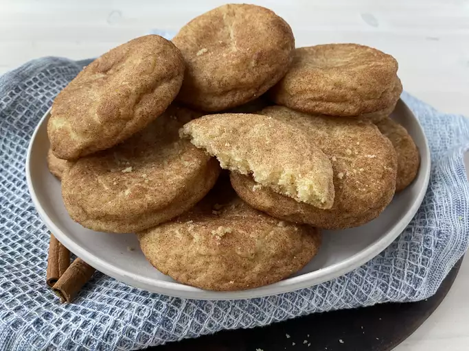

Mrs.Sigg's Snickerdoodles

Description
Try this snickerdoodle recipe for soft and chewy cinnamon-sugar cookies that everyone will enjoy. With crispy edges, chewy centers, and a deliciously spiced sugar coating, these cookies are a crowd please for sure. These snickerdoodle cookies have become very popular with my friends at church — and my pastor loves them. You will too!
Ingredients
- Sugar:This snickerdoodle cookie recipe starts with 1 ½ cups of white sugar.
- Butter and shortening:A blend of butter and shortening creates the ideal rich, fluffy, and soft texture.
- Eggs:Two large eggs add moisture and richness. Plus, they help bind the dough together.
- Vanilla:Vanilla extract lends complexity and enhances the overall flavor
- Flour:All-purpose flour has gluten, which gives the dough structure.
- Cream of tarter:Most snickerdoodle recipes call for cream of tartar, an ingredient that gives the cookies their signature tangy flavor and pillowy texture.
- Baking soda:Baking soda acts as a leavener, which means it helps the cookies rise.
- Salt:A pinch of salt enhances the flavors of the other ingredients.
- Cinnamon-sugar:The snickerdoodles are rolled in a sweet, cozy mixture of cinnamon and sugar before they're baked.
Steps
- Make the dough:Beat the sugar, butter, shortening, eggs, and vanilla together. Mix the flour, cream of tartar, baking soda, and salt in a separate bowl. Add the dry ingredients to the wet ingredients, then stir until well-combined.
- Roll the dough:Shape the dough into walnut-sized balls. Roll each ball in cinnamon-sugar until they're all evenly coated.
- Bake the cookies:Bake the cookies in a preheated oven until they're set, but not too hard. Cool on a wire rack.
Link to full recipe!